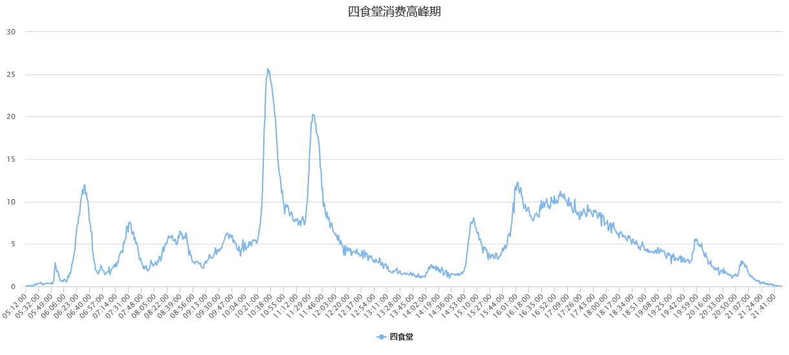

四食堂消费高峰期分析
- 
根据贵州财经大学作息时间将一天分为四个四段： 早餐：5:00:00-10:00:00 中餐：10:00:00-15:00:00 晚餐：15:00:00-20:00:00 夜宵：20:00:00-00:00:00 以学生一卡通刷卡记录为依据，通过对3、4月各个时点的交易次数求平均，计算出各时点交易次数，绘制时间序列图，描绘该食堂消费高峰期。 由图可看出一食堂早餐高峰期在6:32左右，中餐高峰期在10:34和11:34的时候，而晚餐在16:03到17:03期间交易次数较多，夜宵则在19:56和21:00时到达高峰。 在一食堂一天的营业当中，10:34是人流量最大的时候。